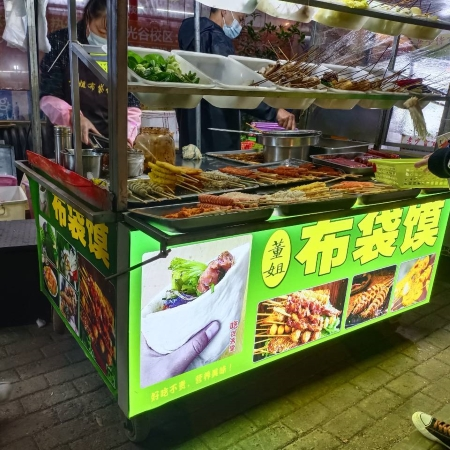
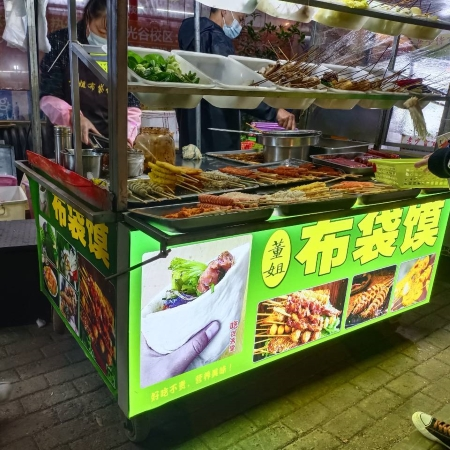
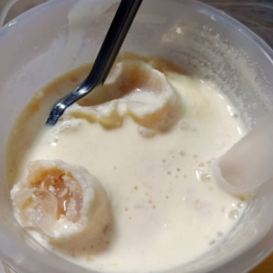

南苑
布袋馍



布袋馍真的是我的真爱了，也是我们寝室三个人的真爱，经常吃，每周都吃。
来学校之后我也是第一次听到有布袋馍这种食物，感觉有点新奇。
它其实就是，有一个馍饼，里面包着剪碎的炸串。
第一次尝之后，后面真的一发不可收拾，真的可以连续吃两三天。
我尤其爱吃里面的炒年糕、金针菇、面筋，简直是我的天菜。

布袋馍和冰激凌红茶简直绝配，我对冰激凌红茶的喜爱程度和布袋馍一样，甚至比布袋馍多一点
茶如其名，它的原料就是冰激凌和红茶。
冰激凌口感非常好，它融化后和红茶混合在一起也很好喝。
总之，目前它在我这里的奶茶排名已经是第一了。